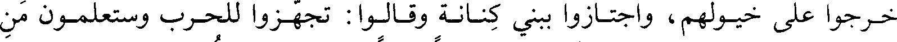
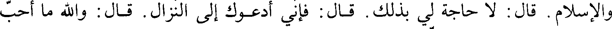

File: 000570.gt.txt (if the image is defective, simply delete all Arabic text and the line will be excluded)
وعشرين ليلة قريبا من شهر، ولم يكن بين القوم حرب إلا الرمي [بالنبل](1).
File: 000571.gt.txt (if the image is defective, simply delete all Arabic text and the line will be excluded)
فلما اشتد البلاء بعث رسول الله، صلي الله عليه و سلم، إلى عيينة بن حصن، والحارث بن عوف
File: 000572.gt.txt (if the image is defective, simply delete all Arabic text and the line will be excluded)

المري، قائدي غطفان، فأعطاهما ثلث ثمار المدينة على أن يرجعوا(2) بمن معهما عن
File: 000573.gt.txt (if the image is defective, simply delete all Arabic text and the line will be excluded)

رسول الله، صلي الله عليه و سلم، فأجابا إلى ذلك، فاستشار رسول الله، صلي الله عليه و سلم، سعد بن معاذ، وسعد بن
File: 000574.gt.txt (if the image is defective, simply delete all Arabic text and the line will be excluded)

عبادة، فقالا: يا رسول الله شيء تحب أن تصنعه، أم شيء أمرك الله به، أو شيء تصنعه
File: 000575.gt.txt (if the image is defective, simply delete all Arabic text and the line will be excluded)

لنا؟ قال: بل [لكم]، رأيت العرب قد رمتكم عن قوس واحدة، فأردت أن أكسر عنكم
File: 000576.gt.txt (if the image is defective, simply delete all Arabic text and the line will be excluded)
شوكتهم. فقال سعد بن معاذ: قد كنا نحن وهم على الشرك، ولا يطمعون أن يأكلوا منا
File: 000577.gt.txt (if the image is defective, simply delete all Arabic text and the line will be excluded)

تمرة إلا قرى أو بيعا، فحين أكرمنا الله بالإسلام نعطيهم أموالنا! ما نعطيهم إلا السيف
File: 000578.gt.txt (if the image is defective, simply delete all Arabic text and the line will be excluded)
حتى يحكم الله بيننا وبينهم. فترك ذلك رسول الله صلي الله عليه و سلم(3).
File: 000579.gt.txt (if the image is defective, simply delete all Arabic text and the line will be excluded)

ثم إن فوارس من قريش، منهم: عمرو بن عبد ود أحد بني عامر بن لؤي، وعكرمة
File: 000580.gt.txt (if the image is defective, simply delete all Arabic text and the line will be excluded)
بن أبي جهل، وهبيرة بن أبي وهب، ونوفل بن عبد الله، وضرار بن الخطاب الفهري،
File: 000581.gt.txt (if the image is defective, simply delete all Arabic text and the line will be excluded)

خرجوا على خيولهم، واجتازوا ببني كنانة وقالوا: تجهزوا للحرب وستعلمون من
File: 000582.gt.txt (if the image is defective, simply delete all Arabic text and the line will be excluded)
الفرسان. وكان عمرو بن عبد ود قد شهد بدرا كافرا، وقاتل حتى كثرت الجراح فيه، ولم
File: 000583.gt.txt (if the image is defective, simply delete all Arabic text and the line will be excluded)

يشهد أحدا، وشهد الخندق معلما حتى يعرف مكانه، فأقبل هو وأصحابه حتى وقفوا على
File: 000584.gt.txt (if the image is defective, simply delete all Arabic text and the line will be excluded)

الخندق، ثم تيمموا مكانا ضيقا فاقتحموه، فجالت بهم خيولهم في السبخة، بين الخندق
File: 000585.gt.txt (if the image is defective, simply delete all Arabic text and the line will be excluded)

وسلع.
File: 000586.gt.txt (if the image is defective, simply delete all Arabic text and the line will be excluded)

وخرج علي بن أبي طالب في نفر من المسلمين، فأخذوا عليهم الثغرة، وكان
File: 000587.gt.txt (if the image is defective, simply delete all Arabic text and the line will be excluded)

عمرو قد خرج معلما، فقال له علي: يا عمرو إنك عاهدت أن لا يدعوك رجل من قريش
File: 000588.gt.txt (if the image is defective, simply delete all Arabic text and the line will be excluded)

إلى خصلتين، إلا أخذت إحداهما؟ قال: أجل. قال له علي: فإني أدعوك إلى الله
File: 000589.gt.txt (if the image is defective, simply delete all Arabic text and the line will be excluded)

والإسلام. قال: لا حاجة لي بذلك. قال: فإني أدعوك إلى النزال. قال: والله ما أحب
File: 000590.gt.txt (if the image is defective, simply delete all Arabic text and the line will be excluded)
أن أقتلك. قال علي: ولكني أحب أن أقتلك. فحمي عمرو عند ذلك، فنزل عن فرسه
File: 000591.gt.txt (if the image is defective, simply delete all Arabic text and the line will be excluded)
وعقره، ثم أقبل على علي، فتجاولا، وقتله علي، وخرجت خيلهم منهزمة، وقتل مع
File: 000592.gt.txt (if the image is defective, simply delete all Arabic text and the line will be excluded)
عمرو رجلان، قتل علي أحدهما، وأصاب آخر سهم، فمات منه بمكة(4).
File: 000593.gt.txt (if the image is defective, simply delete all Arabic text and the line will be excluded)

ورمي سعد بن معاذ بسهم قطع أكحله، رماه حبان بن قيس بن العرقة بن عبد
File: 000594.gt.txt (if the image is defective, simply delete all Arabic text and the line will be excluded)

مناف، من بني هصيص بن عامر بن لؤي، والعرقة أمه(1)، وغنما قيل لها العرقة لطيب ريح
File: 000595.gt.txt (if the image is defective, simply delete all Arabic text and the line will be excluded)

عرقها، وهي قلابة بنت سعيد بن سعد بن سهم، وهي أم عبد مناف بن الحارث. فلما رمى سعدا
File: 000596.gt.txt (if the image is defective, simply delete all Arabic text and the line will be excluded)
قال: خذها وأنا ابن العرقة. فقال النبي، صلي الله عليه و سلم: عرق الله وجهك في النار، ولم يقطع
File: 000597.gt.txt (if the image is defective, simply delete all Arabic text and the line will be excluded)

[الأكحل] من أحد إلا مات. فقال سعد: اللهم إن كنت أبقيت من حرب قريش شيئا
File: 000598.gt.txt (if the image is defective, simply delete all Arabic text and the line will be excluded)
وكانوا حلفاءه ومواليه في الجاهلية.
File: 000599.gt.txt (if the image is defective, simply delete all Arabic text and the line will be excluded)

وقيل إن الذي رمى سعدا هو أبو أسامة الجشمي حليف بني مخزوم(3). فلما قال
To Save: `Ctrl+s`, make sure to choose `Webpage, complete`!